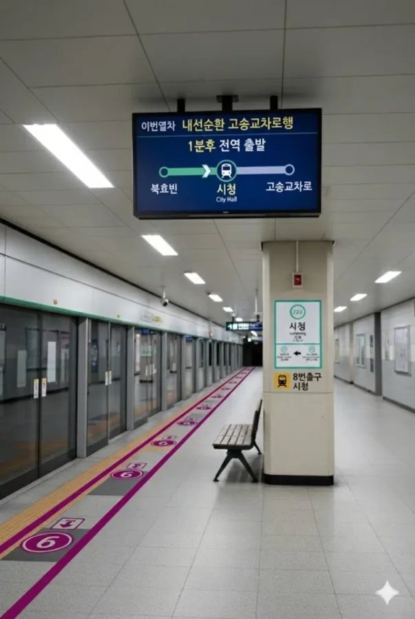
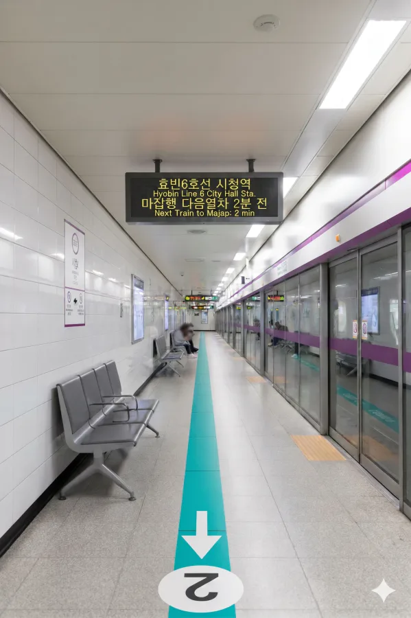

1. 개요
효빈 도시철도 2호선 228번, 효빈 도시철도 6호선 618번, 그리고 향후 개통 예정인 창전선 C22번. 효빈광역시 북구 고송동 79-2 지하 소재이다.
효빈광역시의 심장부인 고송동 행정타운 정중앙에 자리 잡은 핵심 환승역으로, 2호선 마스코트인 하루빈과 6호선 마스코트인 라세나의 대형 등신대가 환승 통로 한복판에서 승객들을 반겨주는 곳으로도 유명하다. 훗날 창전선이 개통되면 심세이까지 합류해 환승 통로가 3인조 혼성 아이돌 무대가 될 예정이다(...)
2. 역 정보
효빈광역시 북구 고송동 신시가지에 위치한 도시철도역으로, 효빈에서 승객이 많은 핵심 노선인 2호선(초록색, #00CCAA)과 6호선(보라색, #881188)이 십자(十)로 교차하며 환승하는 주요 거점이다. 2호선은 효빈로를 따라, 6호선은 고송대로를 따라 건설되었다.
추후 창전선(#33AAFF)이 개통되면 무려 3개 노선이 만나는 트리플 역세권이 될 예정이다. 전 역인 청능역이 수요 불확실성을 이유로 개통이 미뤄진 것과 달리, 시청역은 이미 검증된 폭발적인 수요를 바탕으로 2033년 8월 30일에 조기 개통이 확정되었다. 이는 창전선 2·3단계 연결 구간 중 가장 먼저 영업을 개시하는 사례가 될 것이다.
역명에서 알 수 있듯 효빈광역시청과 효빈덕북지방우정청 바로 앞에 위치하여 시청·우정청 공무원들과 민원 방문객, 그리고 시청공원 및 효빈시청한바다도서관 이용객들이 구름처럼 몰려든다. 2004년 광역시청 이전과 함께 주변 개발이 가속화되어 급격한 인구 증가가 이루어졌으며, 중앙로에 이은 거대 상권과 서브컬처·문화 클러스터(국립디지털미디어·게임박물관, 고송 애니메이션 아카이브, 효빈 e스포츠 아레나 등)가 형성되어 수요가 폭발적으로 늘어났다. 고송지역 주민들의 타 지역 통근 수요도 상당하여 효빈광역시 내에서도 손꼽히게 붐비는 역이다.
참고로 2호선 시청역과 3호선 청능역은 직선거리로 꽤 가까운 편이라 3번 출구 방면 연결 통로를 통해 간접 환승이 가능하다고 알려져 있다. 하지만 바로 다음 역인 북효빈역에서 2·3호선 간 개념 있는 직접 환승이 가능하기 때문에 굳이 다리품을 팔며 이 루트를 이용하는 사람은 많지 않다. 운동 부족인 공시생들이 산책 삼아 걸어 다니는 용도 외에는 쓸모가 없다 카더라.
3. 역 주변 정보
역 주변은 그야말로 '효빈광역시 행정·문화·주거·서브컬처의 완전체'라 불러도 손색이 없다. 남쪽과 동쪽으로는 거대한 유리궁전인 효빈광역시청과 시청공원, 효빈덕북지방우정청 등 굵직한 관공서들이 포진해 있고, 서쪽과 북쪽으로는 향토 기업 산곡건설이 낳은 기하학적 괴작(...) 아파트 단지들과 대형 박물관 및 e스포츠 경기장이 역을 빈틈없이 포위하고 있다.
3.1. 출구 정보


 시청역 출구 정보
시청역 출구 정보
|
||
|---|---|---|
| 번호 | 주요 시설 및 방향 | 비고 |
| 1 | 고송8동행정복지센터 고송4지구대 북구청우편취급국 |
치안·행정 민원 밀집 구역 |
| 2 | 월림초등학교 고송코아루아파트 (고송7·8동 방면) |
|
| 3 | 3호선 청능역 방면 사복동 고송5동행정복지센터 효빈 e스포츠 아레나 (379m) |
청능역 간접 연결 통로 |
| 4 | 포아이즈 아파트 펜타곤시티 아파트 북효빈농협 |
포아이즈 단지 초밀착 출구 |
| 5 | 시청오거리 고송 애니메이션 아카이브 국립디지털미디어·게임박물관 |
문화·박물관 클러스터 |
| 6 | 시청공원 (서측 / 101m) 효빈문화재단 |
지하도 연결 |
| 7 | 시청공원 (동측 / 토모리 나무) 효빈시청한바다도서관 |
한바다도서관 B1층 직결 통로 |
| 8 | 효빈광역시청 효빈덕북지방우정청 고송부영아파트 고송중흥S클래스아파트 |
효빈시청 지하 직결 통로 |
| 9 | 효빈광역시의회 현대백화점 효빈점 |
백화점 지하 연결 |
3.2. 주요 인접 시설 상세
- 공공기관 및 우정·치안 (1, 6, 8, 9번 출구):
- 효빈광역시청 & 효빈광역시의회 (8·9번 출구): 26층 높이의 쌍둥이 통유리 청사(일명 유리궁전). 지하도에서 비 한 방울 맞지 않고 바로 청사 로비로 진입할 수 있다.
- 효빈덕북지방우정청 (8번 출구) & 북구청우편취급국 (1번 출구): 효빈광역시와 덕빈북도 전역의 우편·물류·예금을 총괄하는 본청 건물이 시청 맞은편(고송동 478)에 위풍당당하게 서 있다. 간단한 등기나 소포 접수는 1번 출구 앞 북구청우편취급국에서도 빠르게 처리 가능하다.
- 효빈문화재단 (6번 출구): 효빈시의 각종 예술 지원 사업과 서브컬처 콜라보 프로젝트를 기획하는 핵심 산하 기관이다.
- 고송4지구대 (1번 출구): 유동 인구가 폭발하는 시청역 일대와 행정타운의 치안을 든든하게 책임지는 경찰 지구대다. 주말 코스프레 행사나 HAF 기간에는 길 잃은 외지인 안내소 역할까지 톡톡히 해낸다.
- 도서관 및 공원 (6, 7번 출구):
- 시청공원 (6·7번 출구, 역에서 101m): 시청 본관 앞마당에 펼쳐진 대형 도심 광장형 수변 공원. 수령 300년 된 보호수인 일명 '토모리 나무' 앞에서 펭귄 인형을 들고 인증샷을 찍는 덕후들과 산책 나온 공무원들이 평화롭게 공존한다.
- 효빈시청한바다도서관 (7번 출구 지하 직결): 고송동 79-3 시청공원 내 언덕에 자리한 효빈광역시청 직영 공공도서관. 가파른 언덕을 등반할 필요 없이 시청역 개찰구 앞 무인 스마트 대출기('책마중 서비스')를 이용하거나, 7번 출구 방면 지하 직결 통로를 따라 걸어가면 도서관 지하 1층 로비로 땀 한 방울 안 흘리고 진입할 수 있다.
초행길에 1층인 줄 알고 들어갔다가 B1층이라 당황하는 건 통과의례다.
- 박물관 및 상업·체육 시설 (3, 5, 9번 출구):
- 효빈 e스포츠 아레나 (3번 출구, 도보 379m): 북구 고송8동에 위치한 최첨단 e스포츠 전용 경기장. 주말에 굵직한 리그 결승전이나 서브컬처 게임 오프라인 행사가 열리면 3번 출구 일대가 응원봉과 유니폼을 입은 팬들로 인산인해를 이룬다.
- 고송 애니메이션 아카이브 & 국립디지털미디어·게임박물관 (5번 출구): 시청오거리 북서측 문화 클러스터를 대표하는 양대 박물관. 한국과 일본의 애니메이션 원화·셀화 보존고 역할을 하는 아카이브와, 대한민국 게임 역사를 총망라한 국립박물관이 나란히 붙어 있어 전국구 성지순례객들의 필수 코스로 꼽힌다.
- 주요 아파트 단지 (2, 4, 8번 출구):
- 포아이즈 (4번 출구 초밀착) & 펜타곤시티 (4번 출구 도보 3분): 향토 건설사 산곡건설 정태수 회장의 '기하학적 광기'가 빚어낸 전설의 아파트들. 4번 출구 계단을 올라오면 곧바로 지상 40층짜리 거대한 원통형 타워 4개 동(포아이즈, 일명 '효빈시를 감시하는 4개의 눈깔')이 시야를 압도하며, 그 서쪽 옆에는 완벽한 정오각형 요새 구조로 택배기사들을 가둬버리는(...) 펜타곤시티가 자리 잡고 있다.
- 고송코아루 (2번 출구): 고송8동과 고송7동 경계에 걸쳐 있는 대단지 아파트로, 옆 동네 기하학 아파트들의 괴랄한 외관에 지친 주민들에게 평화롭고 안정적인 판상형·타워형 주거 환경을 제공한다.
4. 일평균 이용객
| 시청역 이용객 통계 | ||||
|---|---|---|---|---|
| 연도 | 2호선 | 6호선 | 총합 | 비고 |
| 2020년 | 27,891명 | 22,492명 | 50,383명 | |
| 2021년 | 30,191명 | 23,496명 | 53,687명 | |
| 2022년 | 33,791명 | 25,494명 | 59,285명 | |
| 2023년 | 35,191명 | 27,090명 | 62,281명 | 한바다도서관 재개관 및 박물관 개관 효과 |
| 2024년 | 35,331명 | 27,192명 | 62,523명 | |
6호선 개통 전까지는 인근의 고송교차로역이 터져나가기 직전이었으나, 시청역 환승 개통 후 수요가 어느 정도 분산되었다. 그럼에도 불구하고 효빈 전체 2위인 고송교차로역의 그늘에 가려 체감이 덜할 뿐, 비수도권 역 치고는 일평균 6만 명이 넘는 엄청난 이용객 수를 자랑한다. 인접 역들과 수요를 나누어 가짐에도 이 정도라는 것은 효빈시가 얼마나 대중교통 중심 도시인지를 방증한다. 향후 창전선 개통 후에는 환승 유입으로 인해 이용객이 더욱 폭발적으로 늘어날 전망이다.
5. 승강장
5.1. 2호선
※ 복선 상대식 승강장 (지하 2층)

| 북효빈 ↑ | |||
| 하행 (내선) | ㅣ | ㅣ | 상행 (외선) |
| ↓ 고송교차로 | |||
| 상행 (외선) | 2 효빈 도시철도 2호선 (완행/급행) | 북효빈 · 입희 · 중수 방면 (급행 정차) |
| 하행 (내선) | 2 효빈 도시철도 2호선 (완행/급행) | 효빈대학교 · 중앙로 · 월천 방면 (급행 정차) |
5.2. 6호선
※ 복선 상대식 승강장 (지하 3층)

| 동고송 ↑ | |||
| 하행 | ㅣ | ㅣ | 상행 |
| ↓ 고송교차로 | |||
| 상행 | 6 효빈 도시철도 6호선 | 마잡 방면 |
| 하행 | 6 효빈 도시철도 6호선 | 고송나루 방면 |
5.3. 창전선 (예정)
※ 복선 상대식 승강장 (지상 2층)
※ 창전선 급행 열차는 이 역에 정차하지 않고 통과한다.
|
|
||
|
|
6. 연계 교통
6.1. 시내버스
효빈광역시 시내버스 3세대 '스타더스트 작전' 도색 차량들이 쉴 새 없이 정차한다.
| 구분 | 정류소명 | 노선 번호 (3세대 스타더스트 도색 기준) |
|---|---|---|
| 순방향 | 시청역 |
[간선] 25, 123, 232, 291, 522 [지선] 241, 251 [광역] 3000, 6000 [좌석] 3333, 6666 [공항] A01 |
| 역방향 | 시청역(건너편) |
[간선] 52, 213, 322, 821, 252 [광역] 3000R, 6000R [좌석] 3333R, 6666R [공항] A01R |
6.2. 효빈광역시 시티투어버스
6·7번 출구(효빈시청한바다도서관 앞) 및 8번 출구(효빈광역시청 정문) 전용 정류장에서 전국 유일 지자체 공식 이타샤(Itasha) 투어버스인 효빈 시티투어버스(네이비 도색, #7777AA / 시이나 타키 컬러)로 환승할 수 있다. 주요 정차 노선은 T03(러브라이브 선샤인 호), T09(로젤리아 야경 호), T10(MyGO!!!!! 에디션, 일명 '타키 짱의 잔소리 버스')이다.
7. 기타 및 여담
- 역명 변천사: 원래 이 역의 이름은 고송역이었다. 2004년 시청이 중보로(구시청앞역 인근)에서 이곳으로 이전해 오면서 현재의 '시청역'으로 역명이 변경되었다. 이후 '고송역'이라는 명칭은 6호선이 개통하면서 고송신도시 정중앙에 신설된 역이 가져가게 되었다.
- 6호선 공사의 비하인드: 6호선 시청역 건설 당시 공사 도중 강물이 유입될 뻔한 사고 등 여러 난관이 있었고, 수요에 대한 회의론까지 겹쳐 완공이 지연되었다. 더 늦어질 뻔했으나, 인근 고송교차로역이 그야말로 '지옥의 혼잡도'를 보여주자, 수요를 의심했던 효빈도시공사는 시민들에게 욕을 바가지로 먹고(...) 부랴부랴 완공시켰다는 전설이 있다.
-
4번 출구 앞 기하학적 멀미와 택배기사의 눈물: 4번 출구 계단을 올라오자마자 마주하는 산곡건설의 걸작(?) 포아이즈(40층짜리 원통 4개가 솟아오른 아파트)와 그 옆 펜타곤시티(완벽한 정오각형 요새 아파트) 때문에 초행길 방문객들이 심각한 공간지각능력 상실(...)을 겪곤 한다. 특히 명절 시즌만 되면 8번 출구 쪽 효빈덕북지방우정청과 1번 출구 북구청우편취급국에서 쏟아져 나온 신입 집배원 및 택배 기사들이 펜타곤시티의 'AT 필드(오각형 중정 미로)'와 포아이즈의 '원형 무한 복도'에 갇혀 출구를 찾지 못하고 4번 출구 앞을 빙빙 도는 눈물겨운 광경이 목격된다.
결국 참다못한 고송4지구대 경찰관들이 길 안내를 해준다는 슬픈 전설이 있다. -
평일 낮 12시 '고송동 점심 대첩'과 수요일 식권 쟁탈전: 평일 12시 정각이 되는 순간, 8·9번 출구(효빈광역시청, 효빈덕북지방우정청)와 6번 출구(효빈문화재단)에서 공무원 수천 명이 일제히 쏟아져 나와 역 주변 식당가를 점령하는 일명 '고송동 점심 대첩'이 벌어진다. 특히 매주 수요일은 시청 구내식당과 7번 출구 지하로 직결된 효빈시청한바다도서관 지하 1층 식당에서 동시에 '세계관 데이'(일본식 수제 치즈돈가스, 누마즈 덮밥, 야마부키 베이커리 특식 등)를 운영하는 날이라, 공무원·공시생·성지순례 덕후들이 지하 연결 통로를 전력 질주하는 진풍경이 펼쳐진다.
11시 50분에 출발하면 이미 늦었으니 조용히 역사 내 GS25에서 삼각김밥이나 고르자. - 평일과 주말의 극단적인 승객 온도차 (공무원 vs 성지순례객): 평일 출퇴근 시간대에는 서류 가방을 든 시청·우정청 공무원들과 무거운 전공책을 멘 한바다도서관 공시생들로 엄숙하고 비장한(?) 분위기를 풍기지만, 주말만 되면 역 전체의 공기가 180도 바뀐다. 3번 출구 효빈 e스포츠 아레나 직관러들, 5번 출구 국립디지털미디어·게임박물관 및 고송 애니메이션 아카이브 관람객들, 그리고 6·7번 출구 시청공원 '토모리 나무'에 펭귄 인형을 바치러(...) 온 성지순례객과 코스어들이 역사를 가득 메운다. 이 때문에 1번 출구 고송4지구대 경찰관들은 주말마다 코스어들의 소품용 모형 무기류 안전 확인 및 유실물 펭귄 인형 보호 업무로 눈코 뜰 새 없이 바쁘다고 한다.
- 환승 통로 마스코트 기싸움과 7번 출구 '언덕 등반'의 저주: 2호선(하루빈)과 6호선(라세나) 환승 통로 중앙에는 두 캐릭터의 굿즈 자판기가 나란히 설치되어 있는데, 시청 공무원들은 2호선 하루빈 정기권을, 우정청과 인근 고등학교 학생들은 6호선 라세나 교통카드를 선호해 매달 매출 순위가 엎치락뒤치락한다. 한편 7번 출구 방면 개찰구 앞에는 효빈시청한바다도서관의 자랑인 무인 스마트 대출기(책마중 서비스)가 설치되어 있어 언덕을 안 올라가고도 책을 빌릴 수 있는데, 단 하루라도 연체하거나 부록 CD가 딸린 도서를 빌린 경우 기계가 반납을 칼같이 거부한다(...). 이 경우 얄짤없이 지하 통로를 지나 도서관까지 올라가야 하므로, 기계 앞에서 좌절하며 절규하는 이용객들을 매일같이 볼 수 있다.